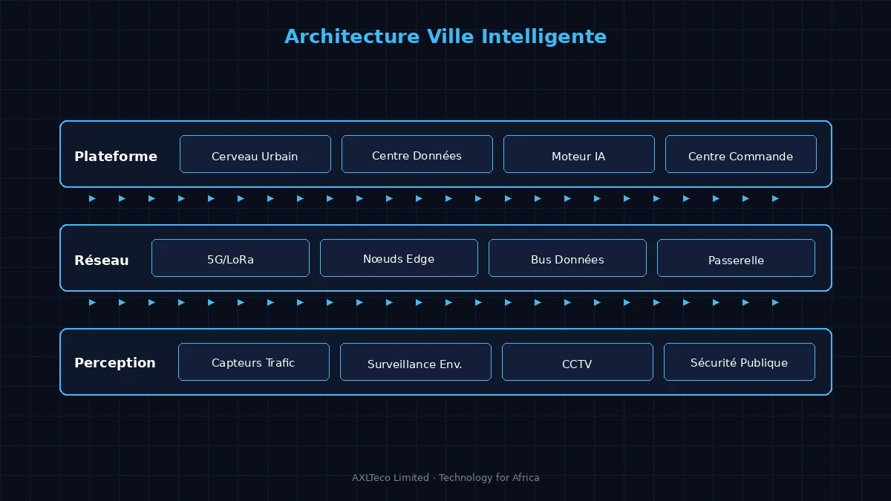
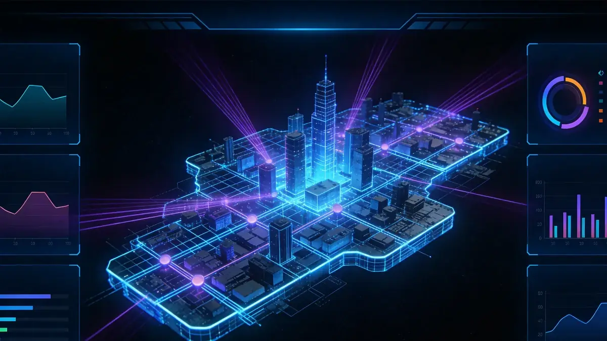

Architecture Système

Architecture jumeau numérique ville intelligente
La solution ville intelligente s'appuie sur la base numérique CIM (City Information Modeling), établissant une architecture globale « Une Plateforme, Deux Centres, N Applications ». La plateforme cerveau urbain intègre les données opérationnelles de la ville, avec des centres de commande et de données qui se pilotent mutuellement pour supporter N scénarios d'application intelligente incluant transport, sécurité, environnement et services gouvernementaux.
Architecture de la Solution

Schéma d'Architecture de la Ville Jumelle Numérique (Source: Documents de Référence sur le Jumeau Numérique)
Composition de la Solution
Capacités Principales
Architecture d'Application
La plateforme ville intelligente adopte une architecture microservices cloud-native : la couche inférieure est la couche d'accès de perception IoT urbaine ; la couche intermédiaire comprend les middle platforms de données et d'IA ; la couche supérieure contient les applications métier pour divers départements gouvernementaux. Grâce à un système d'exploitation urbain unifié, l'interopérabilité des données inter-départements et la collaboration métier sont réalisées, éliminant les « silos d'information ».
Scénarios d'Application

Scénarios ville intelligente
Applicable à la surveillance opérationnelle urbaine, au dispatch de commande d'urgence, à l'optimisation du trafic, au monitoring environnemental, aux services publics et à la simulation de planification urbaine. Grâce à la technologie de jumeau numérique, les plans urbains peuvent être répétés dans l'espace virtuel pour réduire les risques et coûts de construction réelle.
Avantages de la Solution
Basée sur la technologie de jumeau numérique, la solution réalise la « correspondance virtuel-physique » de la ville, permettant la pré-simulation des schémas de planification urbaine dans l'espace virtuel pour réduire les risques de construction réelle. La plateforme a une scalabilité élastique, supportant la construction hiérarchisée des quartiers isolés aux villes entières avec un investissement contrôlable et des résultats rapides.
Valeur de la Solution
Amélioration du niveau de raffinement de la gouvernance urbaine, promotion des « services gouvernementaux en un réseau » et de la « gestion urbaine en un réseau ». Grâce à l'optimisation data-driven de l'allocation des ressources publiques, amélioration de la qualité de vie des citoyens et pose des fondations numériques pour le développement urbain durable.
Pratique Projet
AXLTeco participe activement à la digitalisation urbaine de l'Afrique, fournissant des services de transport intelligent, de vidéosurveillance sécurité et d'infrastructure électrique basse tension intelligente pour des villes comme Lagos, accumulant une riche expérience de mise en œuvre de projets à l'échelle urbaine.